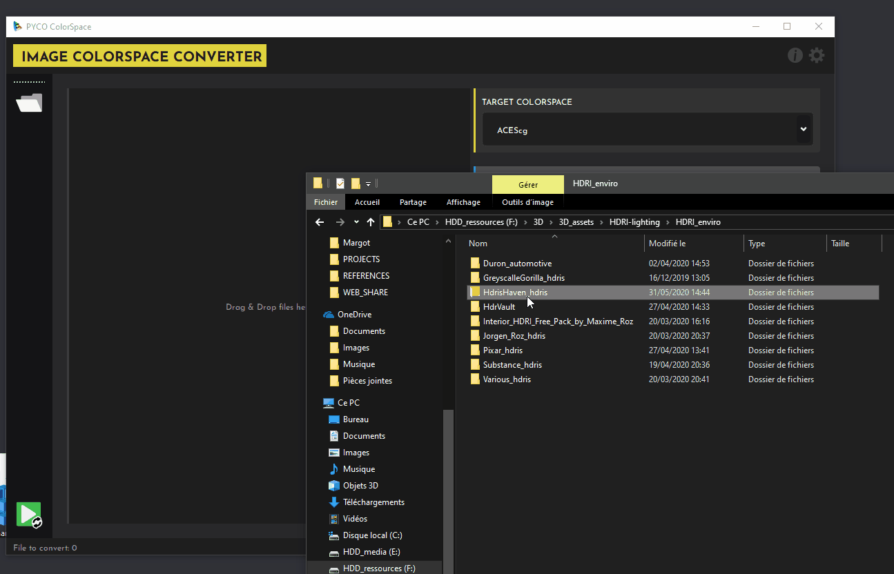

GETTING STARTED¶
Installation¶
Pyco Colorspace can be downloaded here: https://gum.co/pycocs
Choose the package to download depanding on the OS you are on.
Import files¶
You can simply drag & drop any supported file(s) or even just a folder. You can also click on the folder icon to open files through your os explorer.
Warning
When d&d a folder all the files inside it and its sub-directories will be added !

To delete a file you can simply select it and press Del or Backspace
Set the IDT¶
The IDT (Input display Transform) specify the input file colorspace primaries and transfer-function.
Example
For example sRGB-Texture specify that the file has sRGB primaries with the sRGB EOTF transfer function while sRGB-Linear specify that the transfer function is Linear
To apply an IDT to the desired files:
- Select one or multiple file in the list (shift+click & such)
- Select the desired IDT in the dropdown menu.
- Click on Apply to Selection / Apply to All (No selection is needed for this one)
Tip
You can also click & drag down/up to select multiple files quickly in the list.
Change Outputs options¶
Select the colorspace to convert file primaries to in the drop down at the top.¶
Tip
If the IDT and Target Colorspace are the same no conversion will happens (and no linearisation too).
Select your output format:¶
exr
The superior file format for anything that is not to be directly previewed on Internet.
For Textures, hdris, ... everything that is going to be used in your DCC
jpg, png
Only for thumbnails, quick previews, ... You need to apply a Transfer-function / ODT.
Select your bitdepth (output format dependent)¶
Warning
When converting hdris it is recommended to output a 32bit Float file to not clip any value
Pick your compression method (exr only)¶
-
None: No compression, for achives files mostly.
-
Zip: "Non Destructive" compression.
-
Zips: Same but can be write/read faster in some softwares.
-
Dwaa: Destructive compression (not visible) but produce very light files.
Set the compression amount (output format & compression method dependent)¶
- jpg: 100 = Max Quality ; 0 = Minimum quality but light files
- exr(dwaa/dwaab): 0 means Max quality
Select your output location option.¶
Refer to the Functionalities page.
Start The Conversion¶
Click on the green play button in the toolbar to start converting. When a file is converted it will be removed from the list. If you click on Abort, the currently converted file will still be converted.
Some Examples¶
Example 01
Importing a 3d render in .exr rendered with ACEScg primaries and applying an ODT for sharing on Internet:
IDT: ACEScg ;
TargetColorSpace: ACEScg ;
Output format: .jpg ; Compression: 100 (max quality) ;
ODT: sRGB(ACES)
Example 02
Importing a albedo texture in .exr from Megascans (sRGB primaries) and convert it to ACEScg
IDT: sRGB-Linear ;
TargetColorSpace: ACEScg ;
Output format: .exr; BitDepth: 16b Float; Compression: zip;